Everything financial, plainly told. A tour of every feature on the site.
সবার টাকার হিসাব, একদম সহজ
Branch experimental · screenshots of a local build, 16 Oct 2026 · ← → or Space to move
What TakaTalks is
Money tools for Bangladesh, next to the videos that explain them
Someone watches a TakaTalks video on tax rebates or FDR returns, then runs their own numbers in a tool right beside it. The estimates follow Bangladesh's published rules for income year 2025-26 (assessment year 2026-27).
Ask for less
No signup to try any calculator. An account appears only at the one moment saving is needed, and the page says why.
On your device
Calculator inputs stay in the browser. Only the tracker stores entries on the server, and the privacy notice says exactly what.
Estimates, not verdicts
Every outside number shows its source and date. No "best bank" score or badge; sorting is labelled "not a verdict".
15 tools in five groups (Tax, Earn, Save, Zakat, More) · English and Bangla throughout · Next.js 16, React 19, Tailwind 4, Prisma/Postgres, on Vercel.
Homepage · /
Pick a tool, or watch first
Hero with "Estimate my tax" and a demo video that loads YouTube only when you tap play.
Tool cards grouped in Tax, Earn, Save, Zakat and More tabs, from one registry shared with the nav.
States up front that calculators keep what you type on your device.
Live
takatalks.com
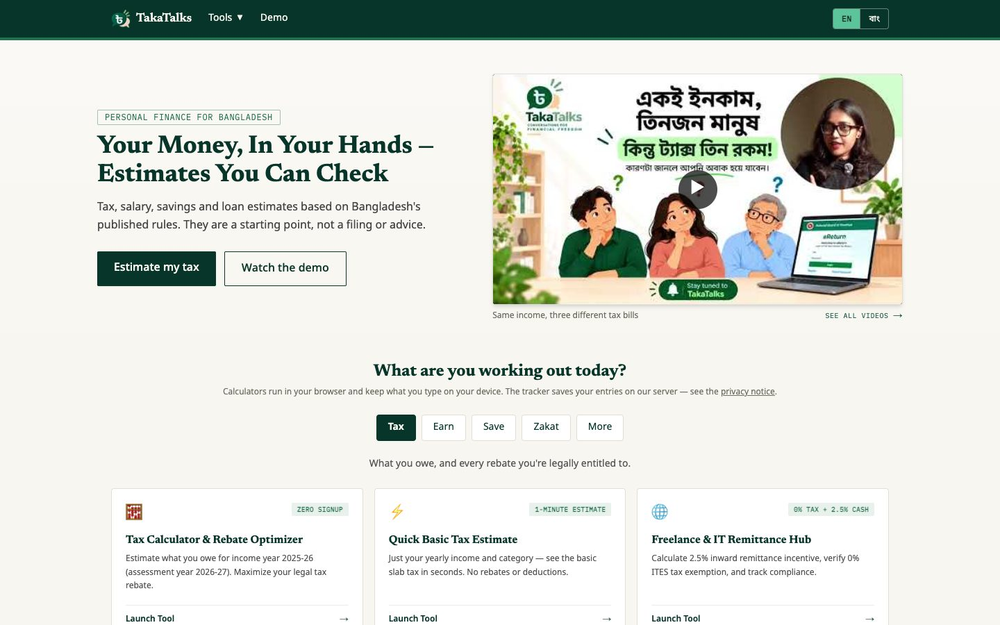
Site navigation
Every tool, one menu away
The Tools menu lists every tool by group; "Demo" goes to the videos page.
Side tools that get checked less often sit under "More", and the page says so.
Footer on every page: "Estimates, not advice", privacy notice, terms and a Feedback link.
Live
Tools menu open
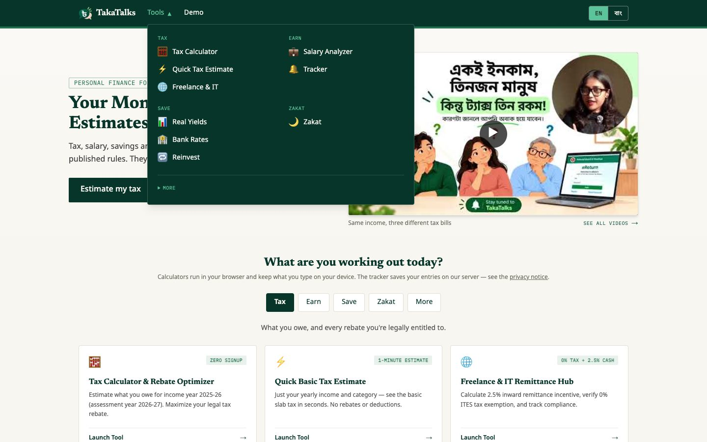
Bilingual · EN / বাং
Bangla by default, English one tap away
Every string ships in both languages; the toggle sits in the nav on every page.
The choice is remembered in the browser (no account needed).
Number fields accept Bangla digits, and the site addresses readers as আপনি.
Live
takatalks.com · বাংলা
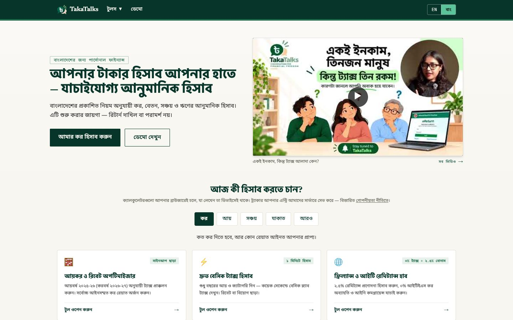
Mobile
Built for the phone in your hand
Full-screen menu with the same tool groups and the language toggle.
Calculators collapse to one column; the step-by-step estimate stays readable.
Live
Captured at 390 × 844 (iPhone-size viewport).
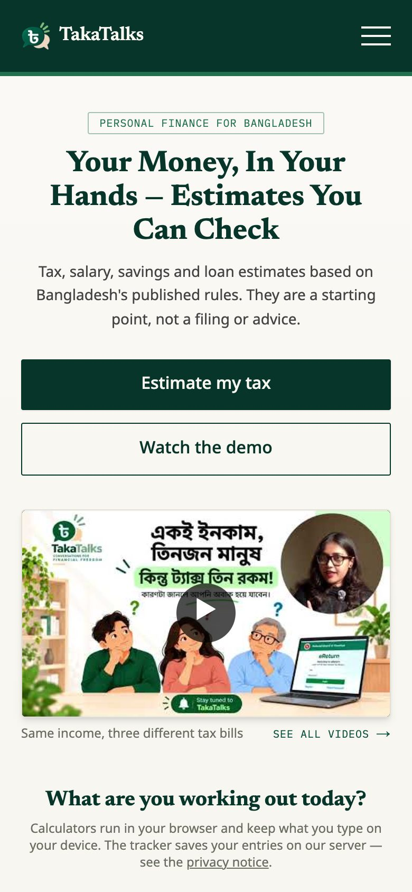
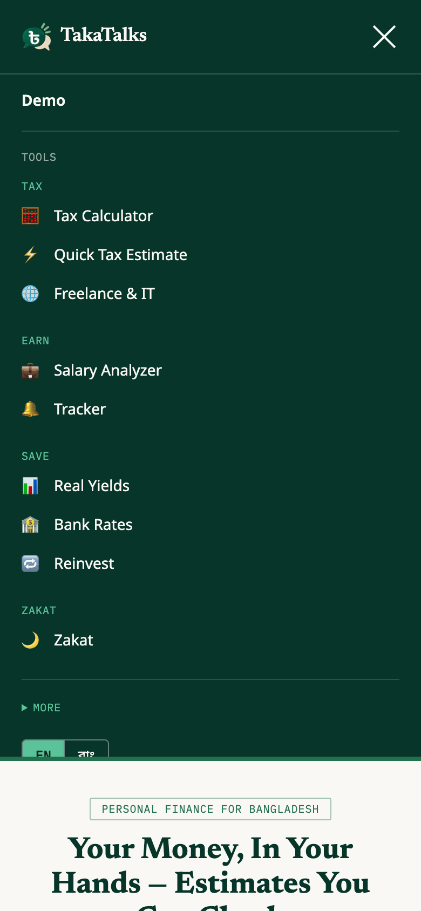
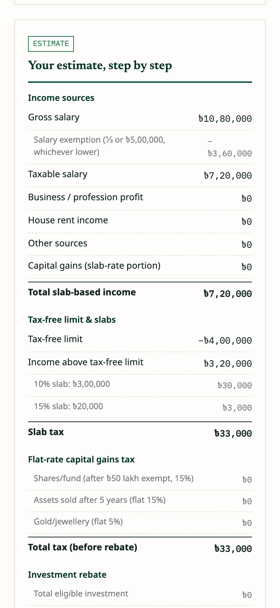
Tax · /calculator
Tax Calculator
Every income head: salary, business, house rent, interest, freelance/ITES, capital gains.
A step-by-step estimate updates as you type. Nothing leaves the browser.
Signed-in tracker users get their saved tax profile filled in.
Live · zero signup
/calculator · ৳12 lakh salary entered
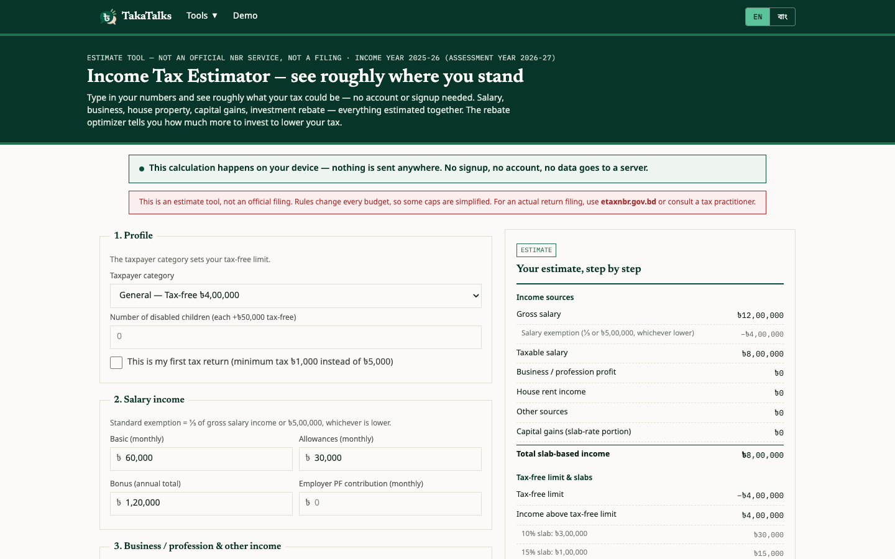
Tax · rebate optimizer
Rebate Optimizer
Shows how much more to invest, and where, to reach the maximum legal rebate.
Rebate is the lowest of 3% of taxable income, 10% of investment, or ৳7.5 lakh.
Never promises tax below the minimum-tax floor (covered by a 144-case test).
Live
/calculator · "You could save ৳10,400"
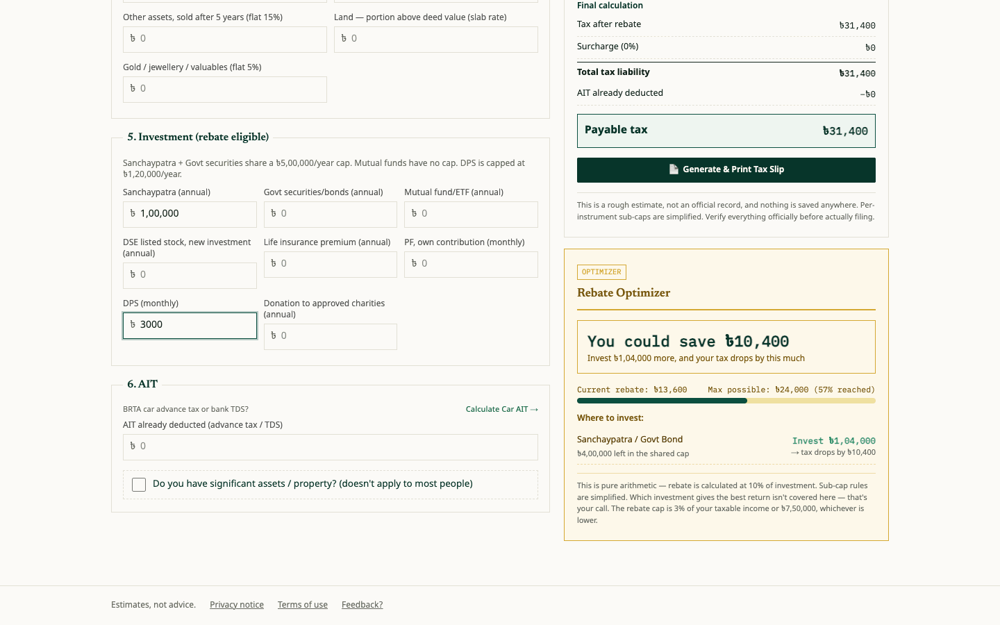
Tax · printable slip
Tax Estimate Slip
One click builds a clean slip: income summary, slab tax, rebate, final payable.
Print or save as PDF, or copy a link that reopens the calculator with the same numbers.
A real modal dialog, labelled as an estimate that doesn't replace the NBR acknowledgement.
Live
/calculator · slip dialog
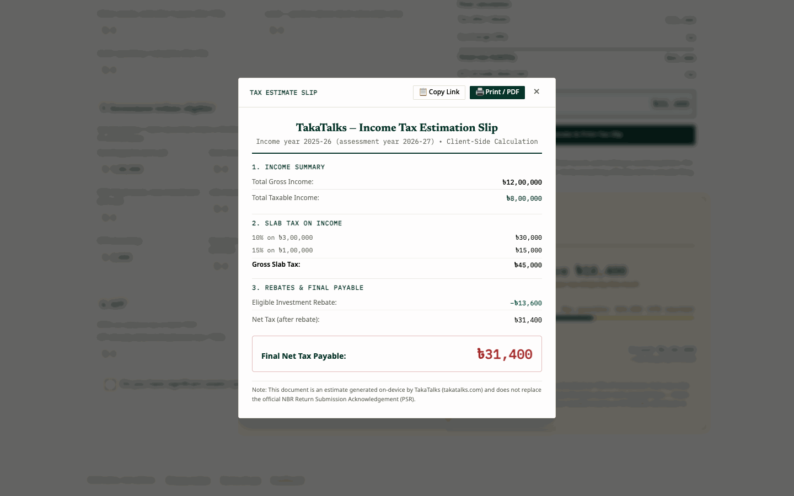
Tax · /tax_basic_calculation
Quick Basic Tax Estimate
Just yearly income and taxpayer category: the slab tax in seconds.
No rebates or deductions, and it says so; links up to the full calculator.
Uses the same tax-rules file as the full calculator.
Live
/tax_basic_calculation · ৳12 lakh
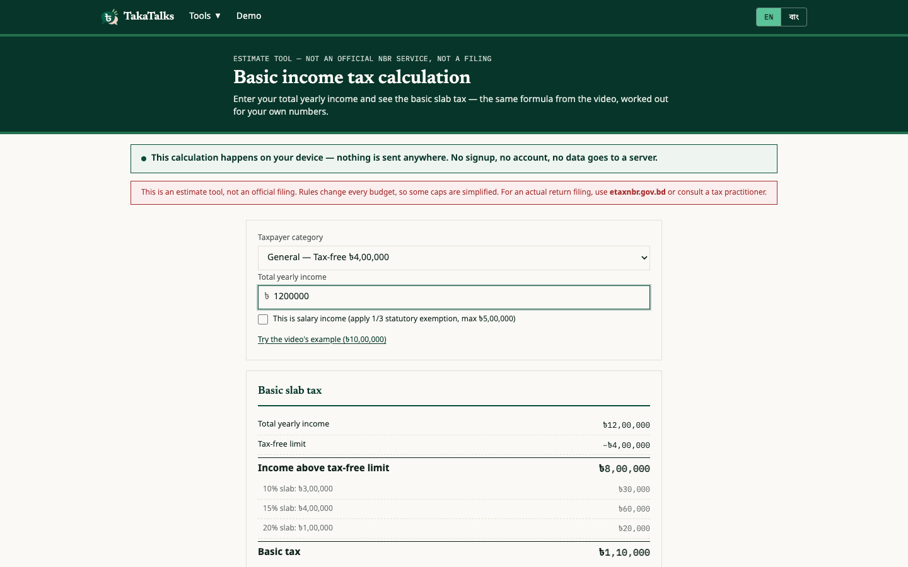
Tax · /freelance
Freelance & IT Remittance Hub
Turns foreign earnings into net in-hand taka at a custom exchange rate.
Adds the 2.5% government inward-remittance cash incentive.
Checks the 0% ITES exemption by service category, with a "white money" compliance checklist.
Live
/freelance
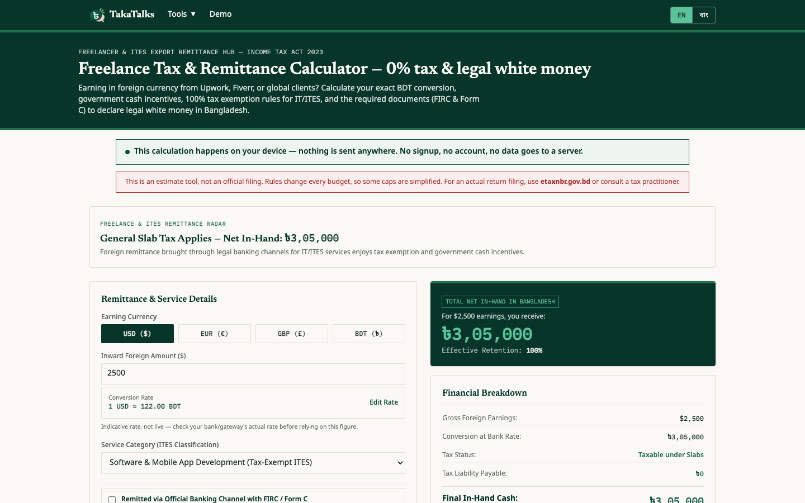
Earn · /salary
Salary Offer Comparator
Current job against up to two offers, side by side.
Monthly bank credit after 10% PF and Section 86 monthly TDS, from the calculator's own engine.
Explains the ⅓-or-৳5 lakh exemption with your taxable salary and effective rate.
Live
/salary
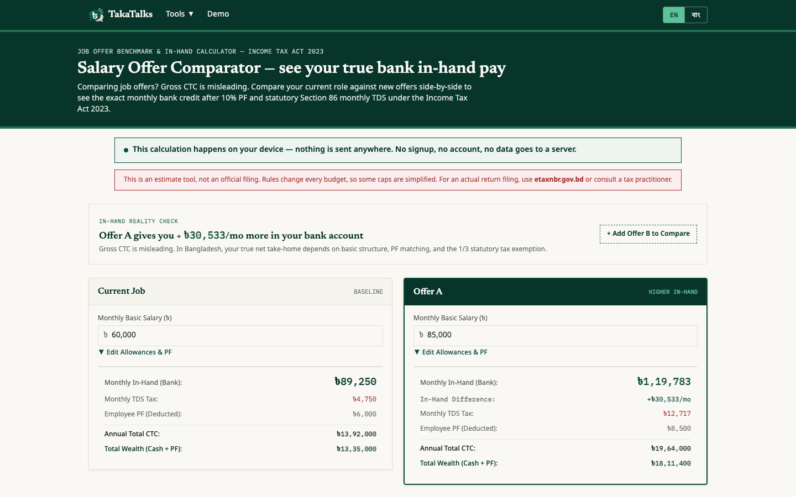
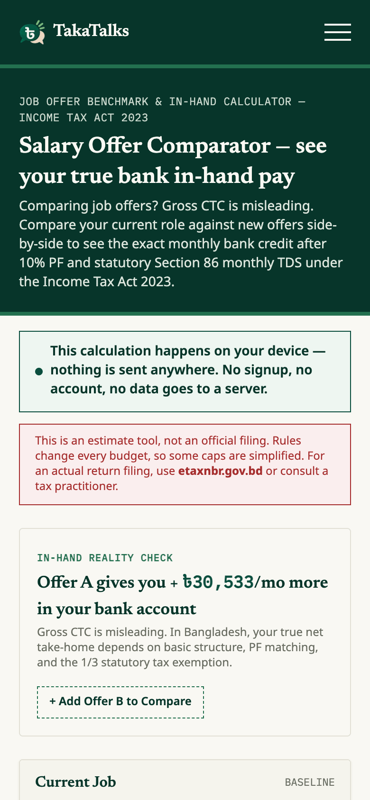
Earn · /tracker
Income & Investment Tracker
Add income sources and investments; each save is stored right away.
A lightweight account is made on the first save: no email or password, just a signed, httpOnly cookie.
Profit estimates after source tax, a maturity dashboard with "Confirm payout", and a saved tax profile for the calculator.
Live · needs the database
Demo entries typed into a throwaway local database.
/tracker · maturity dashboard
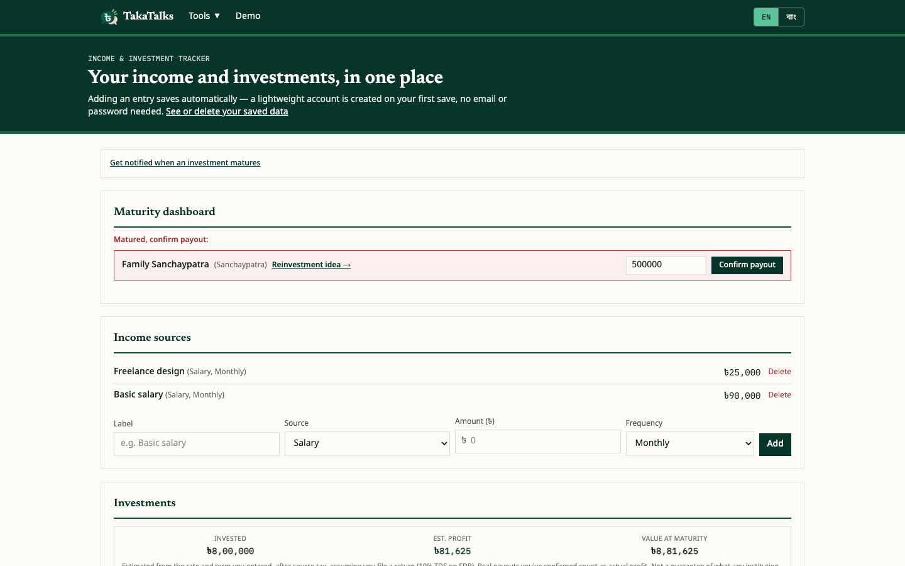
/tracker · investments with estimated profit
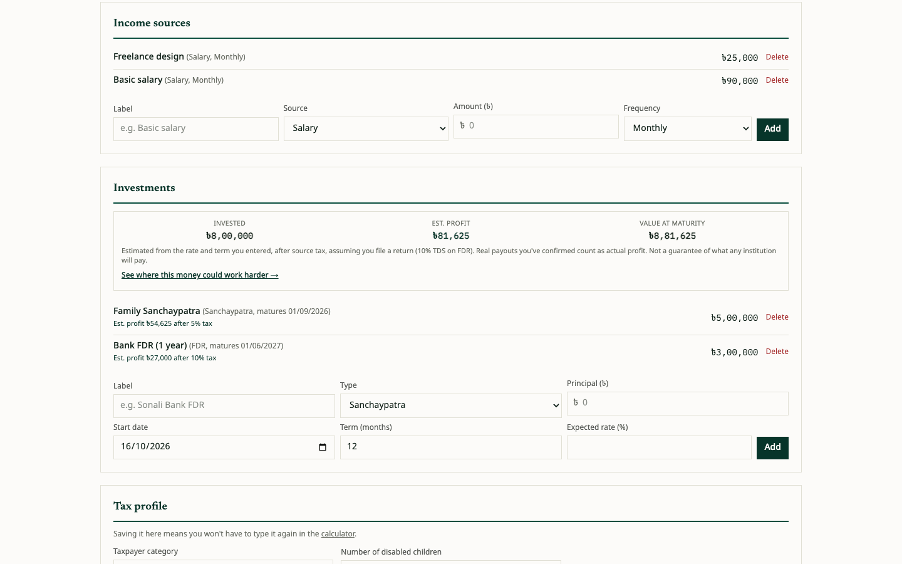
Earn · sign-in for reminders
Maturity Reminders
The one place the site asks for contact details, and it says why: "so we can reach you".
Email magic link or WhatsApp code; only the hash of a link or code is stored.
One reminder per maturity, sent by a daily cron. Only channels that can actually deliver are offered.
Built · not live in production
Production has no email or WhatsApp provider yet, so the prompt is hidden there. This shot used a dummy email config on the local server; no link was sent.
/tracker · "Email me"
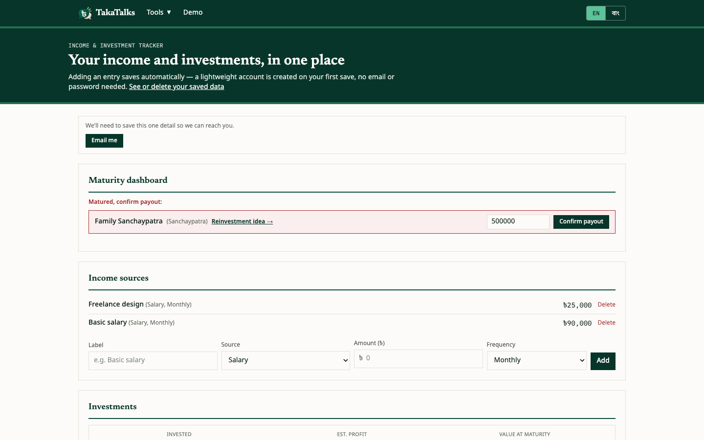
Privacy · /account
See or Delete Your Data
Lists exactly what's saved on the server for this browser.
"Delete my data" removes every entry, the tax profile and the account, after a confirm step.
Linked from the tracker header; kept out of search engines.
Live
/account
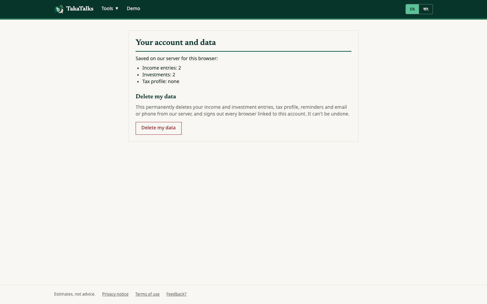
Save · /reinvest
Reinvestment Suggestion
Ranks categories (Sanchayapatra, Govt Bond/Sukuk, FDR, Mutual Fund), never a named bank or fund.
A fixed formula: after-tax real return, rebate room left and your timeline. Every score is shown.
Opens from a matured tracker entry with your numbers; a suggestion can be saved.
Live · not AI, not advice
/reinvest · with tracked data
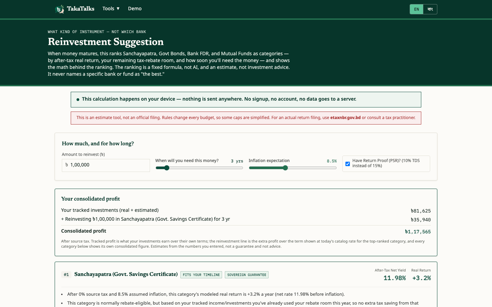
Save · /instruments
Real Yield Matrix
Sanchayapatra schemes, Treasury bonds/Sukuk, bank FDR and mutual funds in one table.
Net return after 5%, 10% or 15% source tax, then after inflation: real purchasing power.
Eligibility and liquidity notes for each instrument; rates are dated.
Live
/instruments
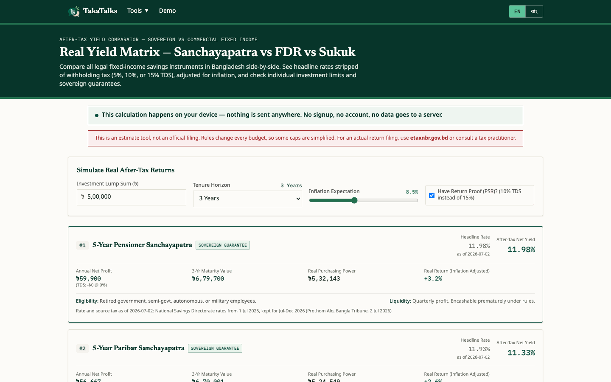
Save · /rates
Bank FDR Rate Comparison
Banks' published FDR rates side by side, with interest after the bank's source tax.
Each row shows its source and last-checked date; missing data says "not available".
Sortable columns, labelled "not a verdict". Deposit-protection note up top.
Built · not live in production
Production has stored no rates yet, so /rates stays out of the nav. This shot is from a local scrape run on 16 Oct (AB Bank live, three banks from the dated manual seed). The audited bank-health panel (CAR, NPL, ROA) needs admin-approved figures and wasn't captured.
/rates · local scrape
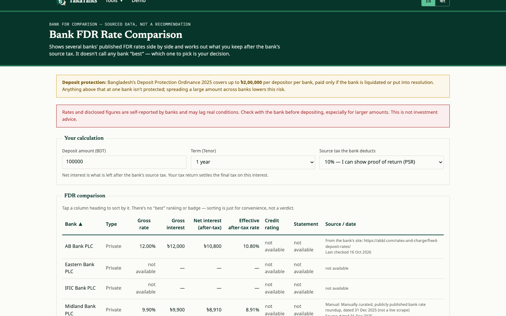
Zakat · /zakat
Zakat Calculator
Silver nisab (recommended) or gold nisab, at prices you confirm for today.
Cash, bank, FDR, gold and silver by bhori, Sanchayapatra, shares, stock, receivables.
Deducts debts due now; bank interest goes into a separate "purify" line, not zakat.
Inflates today's price to the target year, then works out the monthly saving needed.
Shows the monthly saving needed at each instrument's return.
Live
/goals
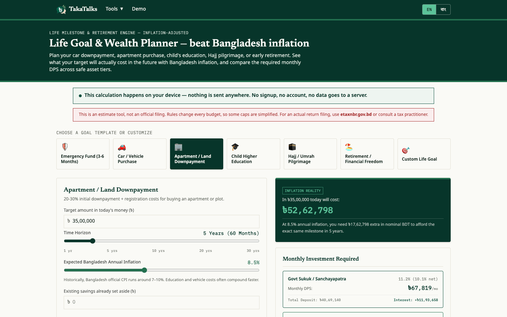
More · /freedom
Financial Freedom Calculator
Starts from the life you want (stop working, move to the village, travel…), not a rule of thumb.
Inflation on both sides, and rent or other passive income you already collect is netted off.
Splits the corpus by role and draws a year-by-year roadmap with a "coast" marker.
Live
/freedom
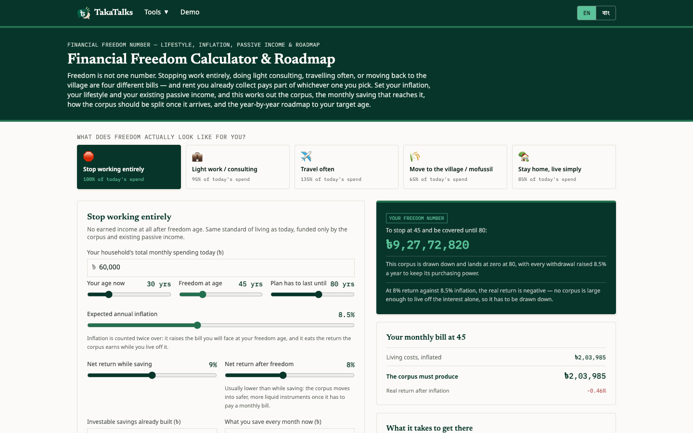
More · /loans
Loan & Home EMI Accelerator
Reducing-balance EMI for home, car, personal and digital loans, from dated presets.
Prepayment planner: interest saved and how many years earlier you finish.
Full amortization schedule, yearly or monthly.
Live
/loans
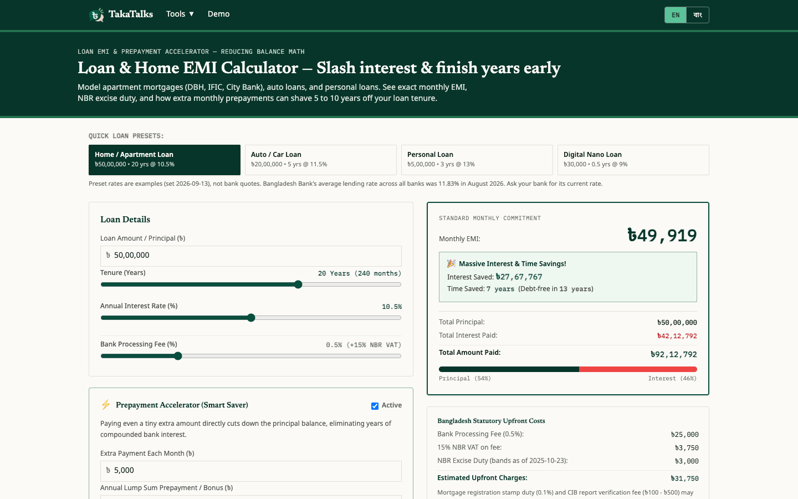
More · /cars
Car Buying & AIT Engine
BRTA advance income tax by engine cc (or EV kW), per Income Tax Act s.153 as amended in 2026.
Flags the second-car wealth surcharge before you buy.
Total-cost-of-ownership and affordability check against your income.
Live
/cars
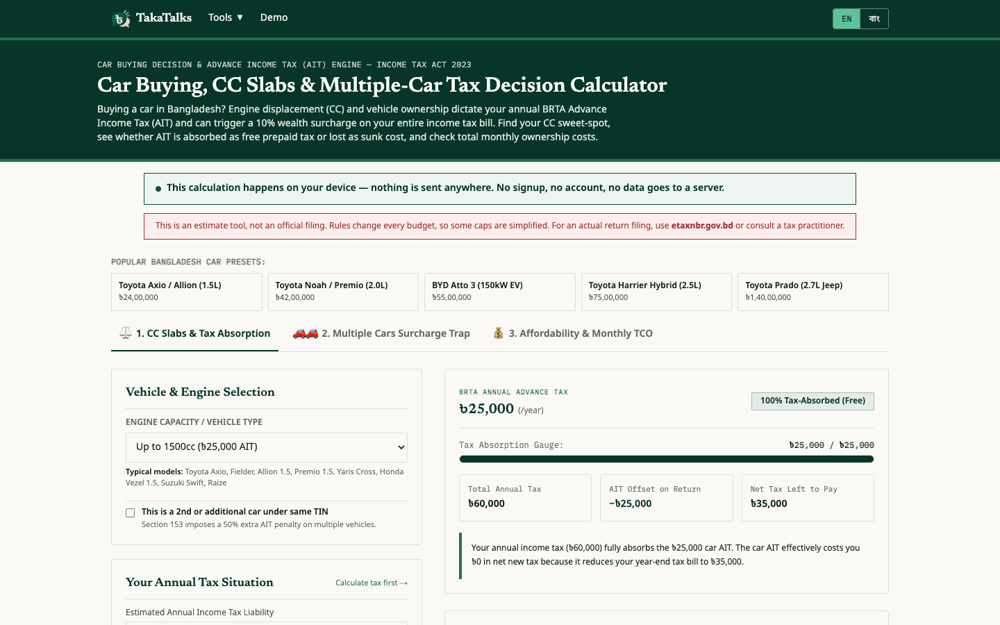
More · /habits
Money Habit Tracker
Subscriptions, data packs, food delivery, rides, daily small spends and card spend: unit cost × frequency.
Set a monthly cap on each and compare against an alternative you price yourself.
Yearly total, and what the gap becomes if saved. Stored only in this browser.
Live
/habits
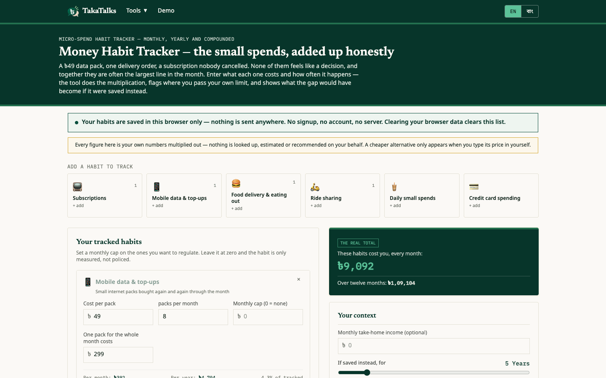
More · /viz
Money Visualizers
Nine shareable posters: Dream Ride loader, Freedom Ludo, Brick by Brick, 64-District Challenge, Matir Bank, Salary in Kacchi, 100-Box, Break the Chain, Shrinking Taka.
Each has its own page, link preview and sitemap entry.
Live
/viz
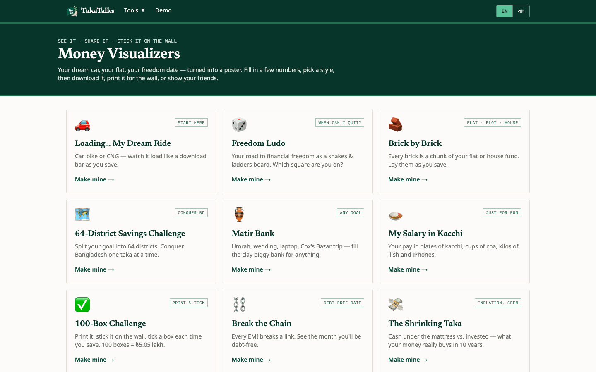
Visualizers · /viz/<slug>
Make It Yours
Type your numbers and the poster redraws live.
Four styles: Sobuj, Rickshaw Art, Dhaka Night, Nakshi Kantha. Optional name on the poster.
Two sizes: Post 4:5 and Story 9:16.
Live
/viz/salary_in_kacchi · Sobuj
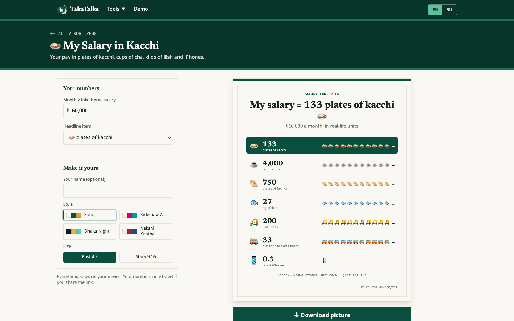
loading_car · Rickshaw Art
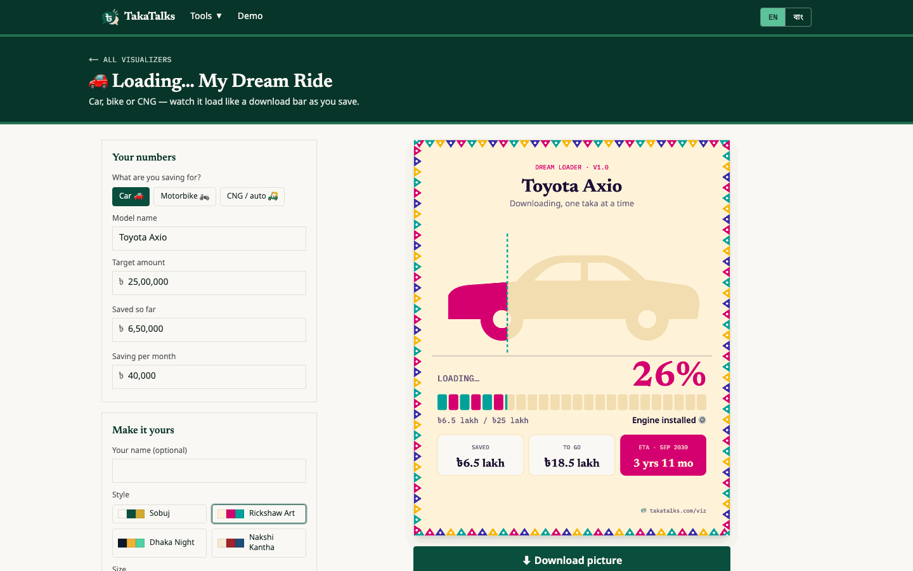
taka_shrink · Dhaka Night
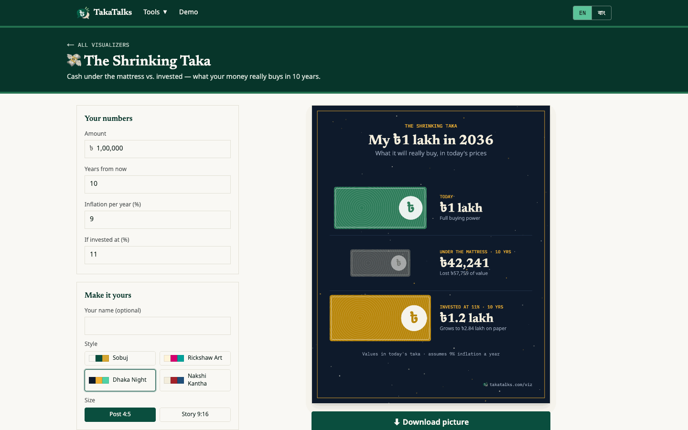
Visualizers · download & share
Download, Share, Print
"Download picture" renders a high-resolution PNG (2160 × 2700 for a 4:5 post).
"Share" uses the phone's share sheet with the image attached; "Copy link" keeps the numbers in the URL.
"Print for wall" prints just the poster, e.g. the 100-box tick sheet for the wall.
Downloads and shares are counted anonymously, never the numbers.
Live
downloaded PNG
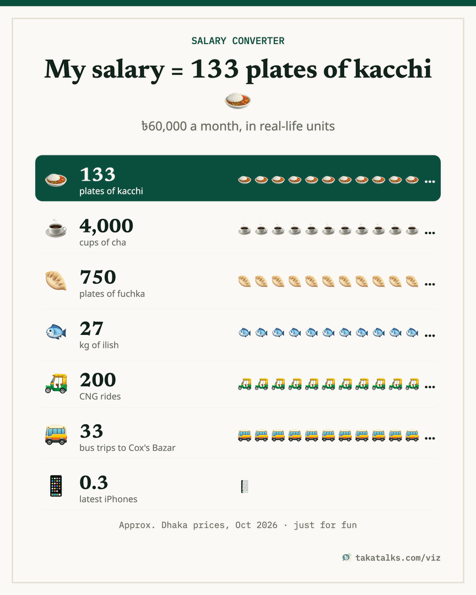
The real file "Download picture" saved
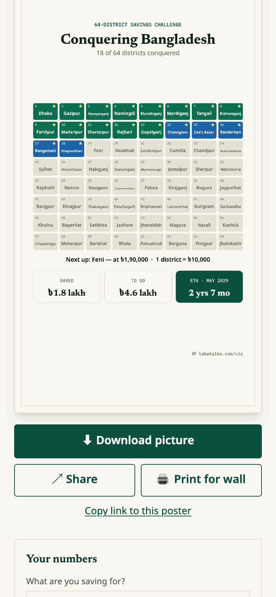
64-District, Story 9:16, phone
Content · /videos
Videos
Hand-picked shortform and longform videos, each linked to the tool it explains.
"Latest on YouTube" syncs from the channel through the YouTube Data API, cached for an hour.
The player loads only when someone taps play.
Live
/videos
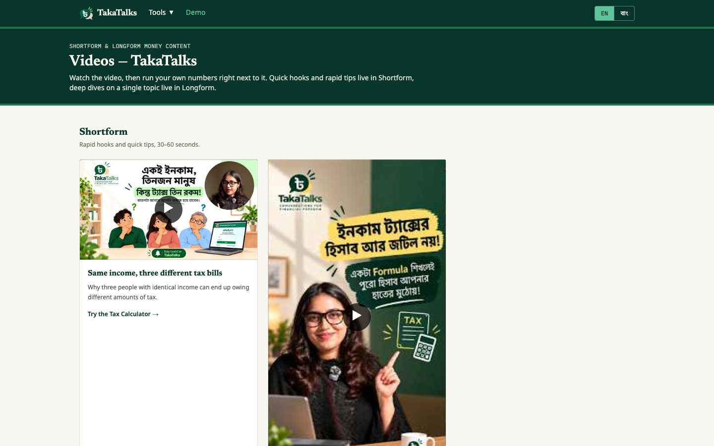
Trust · /privacy and /terms
Privacy, in Plain Words
Says what stays on the device, what the tracker stores, where it's hosted and how to delete it.
Analytics: GoatCounter only (no cookies), plus named events like "tax result shown" or "poster downloaded". Never a typed figure.
Rate limits on saves and login links; admin and cron secrets compared in constant time.
Live · EN + বাংলা
/privacy
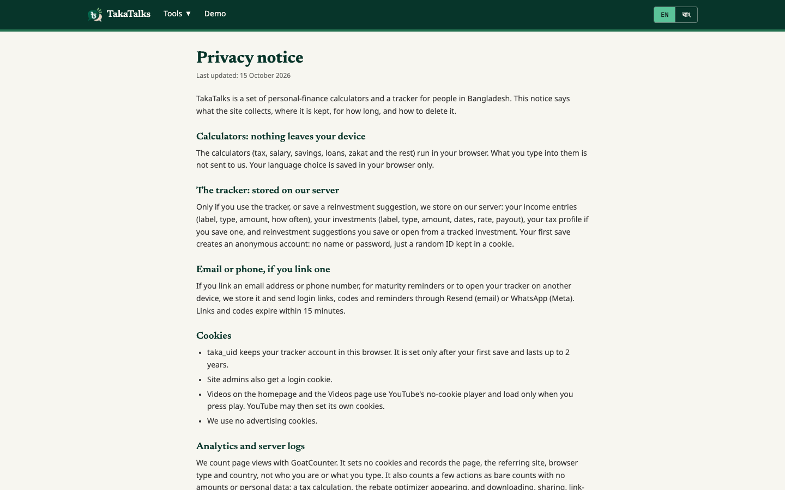
Behind the scenes · /admin
Admin & Operations
Admin login, rate dashboard with "Run scrape now", and approval of bank-health figures pulled from annual-report PDFs.